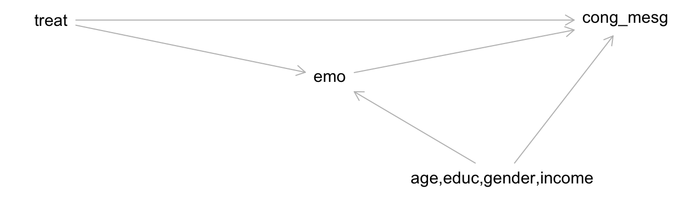

Topic 11 Applied Mediation Analysis
Learning Goals
- Understand a simulation approach for estimating effects of interest in mediation analysis
- Learn to use the
mediationR package - Use mediation analysis to answer research questions
- Draw connections to the framework of sensitivity analyses for unmeasured confounding
Discussion
What is the simulation approach for estimating mediation effects?
- Parametric approach: assume we know the distribution of key quantities
- Nonparametric approach (bootstrapping): we don’t assume we know the distribution of key quantities
If key assumptions hold, we can use models to estimate mediation effects:
- \(E[Y\mid A, M, C]\)
- \(E[M\mid A, C]\)
Essentially, these models are structural: they describe average potential outcomes. If these models have an explicit and convenient form (like below)…
\[ E[Y\mid A, M, C] = \theta_0 + \theta_1 A + \theta_2 M + \theta_3 AM + \theta_4'C \] \[ E[M\mid A, C] = \beta_0 + \beta_1 A + \beta_2'C \]
…there are formulas for the average mediation effects. (See Exercise 3 from Topic 10.)
But what if the \(E[Y\mid A, M, C]\) and \(E[M\mid A, C]\) models don’t allow for ready formulas?
Situation 1: Parametric Approach
Key feature: We assume that we know the true sampling distribution of the parameter estimates from the \(E[Y\mid A, M, C]\) and \(E[M\mid A, C]\) models.
- Fit the \(E[Y\mid A, M, C]\) and \(E[M\mid A, C]\) models. (Only do this once.)
- Use the sampling distribution of the parameter estimates to randomly draw (simulate) a set of parameters. (Goal: will do this many times to quantify the sampling variability of our mediation effect estimates.)
- These randomly drawn parameters define the \(Y\) and \(M\) models.
- For each individual:
- Simulate \(K\) copies of \(M\) under \(A = 0\) and \(A = 1\) using this individual’s \(C\) values.
- Use the simulated \(M\) values to simulate the \(Y\) values under both \(A = 0\) and \(A = 1\).
- Average the potential outcomes over the K copies. This provides an estimate of the individual-level potential outcomes.
- Average the individual-level potential outcomes. End up with one estimate each of \(E[Y^{1M_1}], E[Y^{1M_0}], E[Y^{0M_1}], E[Y^{0M_0}]\)
- Subtract the appropriate values to obtain direct and indirect effects.
- Repeat step 2 \(B \geq 1000\) times.
- Finally, summarize:
- Average the \(B\) copies of the effect estimates to get one overall estimate for each effect.
- Use the 2.5th and 97.5th percentiles to obtain a 95% confidence interval.
Situation 2: Nonparametric Approach
- Resample the original dataset with replacement, maintaining the original sample size.
- Using the resampled data, fit the \(E[Y\mid A, M, C]\) and \(E[M\mid A, C]\) models.
- We use the models to simulate \(M\) and \(Y\).
- For each individual:
- Simulate \(K\) copies of \(M\) under \(A = 0\) and \(A = 1\) using this individual’s \(C\) values.
- Use the simulated \(M\) values to simulate the \(Y\) values under both \(A = 0\) and \(A = 1\).
- Average the potential outcomes over the K copies. This provides an estimate of the individual-level potential outcomes.
- Average the individual-level potential outcomes. End up with one estimate each of \(E[Y^{1M_1}], E[Y^{1M_0}], E[Y^{0M_1}], E[Y^{0M_0}]\)
- Subtract the appropriate values to obtain direct and indirect effects.
- Repeat steps 1 and 2 \(B \geq 1000\) times.
- Finally, summarize:
- Average the \(B\) copies of the effect estimates to get one overall estimate for each effect.
- Use the 2.5th and 97.5th percentiles to obtain a 95% confidence interval.
Exercises
A template Rmd is available here.
Install the mediation package:
install.packages("mediation")Data context
We’ll look at data from a study (cited below) of how the framing of immigration issues in a video affects attitudes about immigration.
Brader, T., Valentino, N. and Suhay, E. (2008). What triggers public opposition to immigration? Anxiety, group cues, and immigration threat. American Journal of Political Science 52, 4, 959–978.
In this study authors constructed different videos of a news story about immigration, and the video was framed and portrayed in 4 different ways. Study participants were randomly assigned to watch one of the 4 videos and were subsequently asked questions related to their stances on immigration.
Outcome variables: (We’ll focus on cong_mesg.)
immigr: A four-point scale measuring subjects’ attitudes toward increased immigration. Larger values indicate more negative attitudes.english: A four-point scale indicating whether subjects favor or oppose a law making English the official language of the U.S.cong_mesg: Whether subjects requested sending an anti-immigration message to Congress (1 = yes, 0 = no).anti_info: Whether subjects wanted to receive information from anti-immigration organizations (1 = yes, 0 = no).
Treatment variables: (We’ll focus on treat.)
tone: 1st treatment; whether the news story is framed positively (0) or negatively (1).eth: 2nd treatment; whether the news story features a European (0) or Latino (1) immigrant.treat: Product of the two treatment variables. 1 if the news story was framed negatively AND about Latino immigrants. 0 otherwise.
Mediator variables: (We’ll focus on emo and p_harm.)
emo: Measure of subjects’ negative feeling during the experiment. A numeric scale ranging between 3 and 12 where 3 indicates the most negative feeling.anx: A four-point scale measuring subjects’ anxiety about increased immigration.p_harm: Subjects’ perceived harm caused by increased immigration. A numeric scale between 2 and 8.
Confounders:
age: Subjects’ age.educ: Subjects’ highest educational attainments.gender: Subjects’ gender.income: Subjects’ income, measured as a 19-point scale.
Load required packages and the data as below:
library(mediation)
library(MASS)
library(dplyr)
library(ggplot2)
data(framing)Research question: Is the effect of the framing treatment mediated more by negative emotions (
emo) or by perceived harm (p_harm)?
Exercise 1
The causal diagram underlying this investigation is below:

This study was a randomized experiment, in which participants were assigned to the different treatment groups. Given this, what do you notice about the DAG structure, and why does this make sense?
In the context of this study, what assumptions are we making when we use modeling to estimate direct and indirect effects? (Phrase this in terms of the specific variables in the study. This will help with the next part.)
After thinking about the assumptions we’re making, do you agree with this DAG? Draw an updated DAG reflecting your expert knowledge using DAGitty, and include the DAG in your document. (You can start from the DAGitty code above. Copy and paste the
dag {...}part into the “Model code” pane on the right.)
Exercise 2
Despite your excellent updated expert knowledge DAG, we’ll have to proceed with the measured variables (i.e., in the context of the original DAG shown above).
- Fit an appropriate model for the mediator (
emo), and call this modelmed_mod. - Fit an appropriate model for the outcome (
cong_mesg), and call this modelout_mod.
Make sure to use visualizations to specify an appropriate form for the model. Recall that you can add code like below to your plots to show observed trends in blue and predicted trends from different model formulations in red:
## For a quantitative outcome:
+ geom_smooth(method = "loess", se = FALSE, color = "blue") +
geom_smooth(formula = y~poly(x,2), method="lm", se = FALSE, color = "red")
## For a binary outcome:
+ geom_smooth(method = "loess", se = FALSE, color = "blue") +
geom_smooth(formula = y~poly(x,2), method="glm", method.args=list(family="binomial"), se = FALSE, color = "red")Exercise 3
With the mediator and outcome models fit, we can use the core function in the mediation package: mediate(). The code below performs the simulation method to estimate mediation effects with \(B = 1000\).
set.seed(394)
mediate_out <- mediate(med_mod, out_mod, treat = "treat", mediator = "emo", robustSE = TRUE, sims = 1000)
summary(mediate_out)There’s a lot in this output! When learning a new package (a great skill to have!), it is essential to visit the documentation. The landing page for the package will always have a reference manual containing the documentation for individual functions, but more sometimes, a more useful vignette will be available.
Open the vignette titled “mediation” (not “mediation-old”) and read the third page describing how different effects are defined. The notation is a little different than what we have defined - if you have questions, ask the instructor.
- Which of the ACMEs (control or treated) corresponds to an effect we have defined? Which effect is it? Give an interpretation of this measure. (Note: these effects are expressed as probability differences.) Based on the confidence interval, do we have evidence for a true effect in the broader population?
- Which of the ADEs (control or treated) corresponds to an effect we have defined? Which effect is it? Give an interpretation of this measure. Based on the confidence interval, do we have evidence for a true effect in the broader population?
- How large is the NIE relative to the total effect and how does this move us toward answering our research question?
Exercise 4
Now perform a mediation analysis using p_harm as the mediator of interest. This includes:
- Fitting appropriate mediator and outcome models
- Using the
mediate()function to estimate the mediation effects
Cite relevant numbers from the mediate() output to answer our original research question. > Research question: Is the effect of the framing treatment mediated more by negative emotions or by perceived harm?
Exercise 5
Let’s not forget about your improved expert DAG. Describe in detail (but don’t actually implement) how we could implement a sensitivity analysis to assess sensitivity of the above results to unmeasured confounding.
Exercise 6
The controlled direct effect is not estimated by this package! Identify the specific place where the simulation approach could be changed to estimate the CDE.